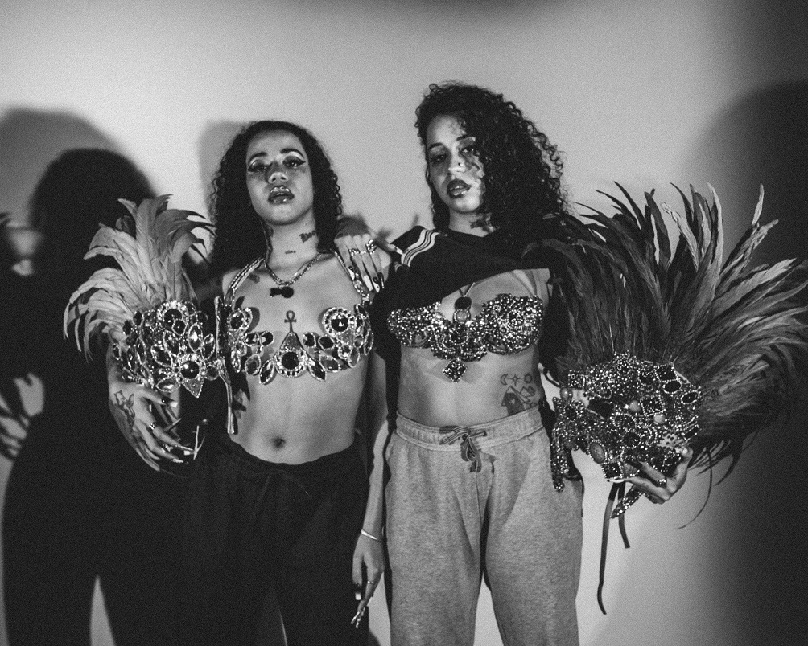

Biografia de Tasha e Tracie
Tasha e Tracie é uma dupla de rappers brasileiras formada pelas irmãs gêmeas Tasha Okereke e Tracie Okereke, que atuam na arte, moda, ativismo e musica. Tasha & Tracie unem o rap com o funk em suas canções e abordam diversos temas ligados a cultura negra, vivência periférica, sexo e ostentação, falando sobre moda, confiança e autoestima. Cresceram no Jardim Peri, na Zona Norte de São Paulo, são filhas de Roseane Aparecida do Nascimento e de James Okereke. Okereke é um sobrenome de origem africana, vindo do pai que é nigeriano, já a mãe delas, é brasileira.
Ascensão
A ascensão começou com o lançamento do EP Rouff em 2019, e se consolidaram com o EP Diretoria em 2021, sendo Lui Lui a faixa mais escutada. A boa repercussão do disco rendeu convite para participarem dos álbuns de Ludmilla, Djonga, Gloria Groove e em outros projetos de artistas do trap.
Diretoria
Em 2021, as gêmeas se consagram ao lançarem seu segundo EP “Diretoria”. Composto por 6 faixas produzidas por MU540, CESRV, etc, e com direção artística de DonCesão e lançado pelo selo Ceia Ent. Além de participações de como, Onnika, Yunk e Vino, entre outro artistas. O álbum é uma fusão entre o rap e funk e fala sobre vivências, conquistas e autoestima de mulheres pretas da periferia. O álbum biográfico passa por temas que vão desde a criação do blog até a ascensão social das artistas. O nome do EP, além de remeter à estrutura das escolas de samba, é uma menção à música homônima do MC Primo. O EP foi reconhecido e concorreu na categoria “Disco do Ano” pela premiação APCA (Associação Paulista dos Críticos de Arte). Ainda em 2021, tiveram duas vezes seus rostos estampados em dois dos telões mais famosos do mundo: Duas vezes na Times Square e uma em Los Angeles. A primeira foi uma ação foi feita pelo Youtube Music com a finalidade de celebrar as vozes negras e a outra foi uma ação promocional do Spotify Radar. O sucesso do álbum, deve-se a incríveis músicas, como, Amarrou,Diretoria e Rouff 
Escute as Rouffers
Caso queira conhecer mais sobre essas grandes artistas, separamos aqui 7 músicas/participações das gêmeas, que são otimas e muito aclamadas pelo público: